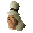
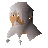
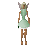
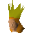
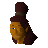

Lumbridge Swamp (underground)
Underground area at 3195, 9583 · Kingdom Of Misthalin, Underground
Open on the world map → Open in knowledge graph → Surface: Lumbridge Swamp
NPCs
| NPC | Level | Spawns | Notable drops |
|---|---|---|---|
| 2 | 3 | ||
| 1 | 3 | ||
 Banker | 3 | ||
| Butterfly | 6 | ||
| Butterfly | 6 | ||
 Door man | 4 | ||
 Fairy | 29 | ||
 Fairy Queen | 1 | ||
| shop | 1 | ||
 Lunderwin | 1 | ||
| 5 |